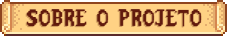

Trilha Ecopedagógica
Birdwatch
Vigia das Aves
Convidamos você a relaxar por alguns minutos e simplesmente ouvir o ambiente ao seu redor. Tente observar, tente escutar, tente sentir e apreciar os pequenos cantores que vivem neste lugar.
Aves do Campus
Você conhece quem está vivendo aqui?

Anu-branco
Guira guira
Pica-pau-verde-barrado
Colaptes melanochlorosCanário-da-terra
Sicalis flaveolaSabiá-laranjeira
Turdus rufiventris
Bem-te-vi
Pitangus sulphuratus
Corruíra
Troglodytes musculus
Anu-preto
Crotophaga ani
Lavadeira-mascarada
Fluvicola nengeta
Um convite para olhar e ouvir
"Com o tempo, muitas aves e sons vão se perdendo no barulho do cotidiano. Este projeto busca resgatar essa conexão, lembrando que a natureza ainda está aqui, basta desacelerar e prestar atenção."
Explore, descubra e experimente
"Treine seu ouvir, seu olhar, seu conhecer... Pequenos passos que despertam curiosidade e preocupação com a natureza."